第33章 从战术角度看图表形态
历史数据表明，如果投资者根据第3～5章所述的道氏理论操作，即在每次长线牛市信号出现时买入有代表性的一组股票，并在每次长线熊市信号出现时卖出所有持仓，则其长期表现理应十分理想。（编者按：参见第4章表格。）尽管列表数据并未考虑卖空（第9版编者按：在第9版中已将卖空纳入考虑范围），但即便考虑在内，我们仍会发现，该组股票可能会在每次长线熊市信号出现时被卖空，并在下个牛市信号出现时被买回归还。结合道指和卖空数据，这些理论交易的总利润（无论是多头还是空头）都非常可观。（第9版编者按：买入并持有至2011年：25952.72美元；按道氏理论仅做多：492597.38美元；按道氏理论既做多也做空：2175913.88美元。）（参见本章图33-1～图33-16。）
这些数据对每个交易者和投资者来说意义重大，后文将详细讲述。
但是，很少有投资者能真正根据道指的长线信号进行100%的买进卖出。
要想做到这点，第一，需要一个较长的市场周期，并假设投资者完全接受道氏理论的经典论断，从不怀疑并更改其中的定义及交易方法，从不撤资。
第二，我们要假设理想的投资者能以极大的勇气面对长线趋势的不利运行，并以超常的耐心静观趋势的无序变化。
第三，我们还须假设所选股票能代表指数中的各成分板块，以确保与指数保持同步变动。实际上，如果组合足够分散，则其走势与指数的走势十分近似。
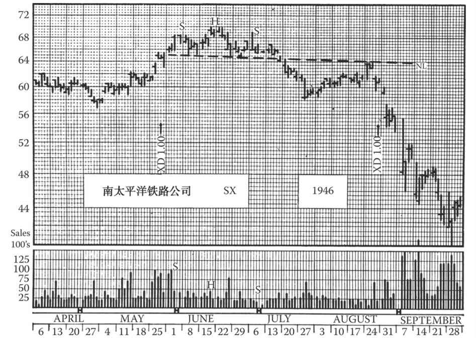
图33-1 这张图展示了一个头肩顶。在1941～1946年的牛市中，南太平洋铁路公司的股价从8美元升至70美元，并于1946年6月见顶。请注意左肩的放量交易、头部的减量交易以及右肩的小量交易。7月15日出现明显的突破信号，提示长线持仓者在第2天卖出（价位约为63美元），而不是等待股价触及61美元的保护性止损位。成交量在突破走势的底部（即58½美元处）放大，随后股价跌到了头肩形所预示的最小目标位。
从该点开始，成交量较低的疲弱行情开始出现，并持续了4周。从该图的低点来看，如果出现涨幅为左肩至底部区间40%～50%的行情，或股价回升至颈线（假设为63美元），那么卖空就更为有利。股价实际上涨至64美元的颈线位置，在缺口处放量跳空，随后，股价持续走低，在随后的3个月内降至40美元以下，并继续下跌。
我们需要时刻关注小型头肩顶（如上图所示）出现的次数，它可能是长线趋势到来的前兆，因而可能改变未来数月或几年的走势。并不是每一个类似形态都会带来如此明显的趋势，但我们仍要对头肩形给予足够的重视
但是，我们很难设想投资者能满足以上所有条件，严格按照“道氏理论”交易。机械地套用任何做法都是不合理的。（编者按：不过根据过往经验，也许真的可以套用。在互联网时代，我们可以参与各种品种和市场的交易，如DIAMONDTM（DIA）和标准普尔存托凭证（SPY），这为应用“道氏理论”创造了条件。这种做法在迈吉的时代非常困难且费用很高，但在现代市场可行。）
我们由此得到的重要启示是：长期来看，我们可以通过长线信号赚取大量理论利润。指数根据所有股票的价格编制而成，所以根据指数的长线趋势买卖绝大多数个股是有利的。有证据表明，长线趋势通常会持续数月或几年，因此，最有可能获利的趋势线便是长线趋势线。
我们因此可以确信，一旦重要趋势出现股指的长线信号，与趋势同步运行的个股更有可能带来赚钱的机会。
建议读者再认真阅读上一段内容。从中我们可以发现，未必要在牛市“高点”卖出，也未必要在“低点”吸筹。如果历史经验表明某些趋势可能会延续较长时间，则不必刻意逆势而为。
这里的侧重点与以前版本有所不同。你会发现，本书并没有出现“长线牛市决不能卖空”或“熊市不可买入”的论调。时常会有一些股票的走势与长线趋势相悖，这些个股的技术走势也许可以证明反向交易的合理性。
如果投资者要交易这些股票，一定要小心谨慎，并且牢记，大多数个股的价格都在沿反方向变动。投资者可以在合适的时机交易这些股票，将它们作为部分对冲的手段，来降低整体持仓风险。例如，如果一轮牛市已经持续了数年，整体方向仍是看涨，但某些个股已经展现出疲态，那么投资者可以将3/4的资金留在多头仓位，并将余下的资金用来配置这些股票的空头仓位。如果牛市持续，投资者最终会在平仓时损失一部分资金，这也可看作购买“保险”的成本。但如果疲态蔓延，牛市最终转熊，那么这些空头仓位就可作为缓冲，部分抵消趋势反转前多头仓位的损失。（第9版编者按：本书编辑在“自然对冲”理论中领悟到的道理，非常有价值。考虑到现代市场的复杂性，对冲的双边都有获利机会。投资者应该将双边获利作为交易目标。）
在平均指数的基础上，我们借助评价指数（具体见第38章），可以判断“这轮牛市大概已经过了60%”或者“过了55%”，而不是仅仅说现在是牛市或熊市。即使都是牛市或都是熊市，也存在势头的差别。对市场程度的判断能帮助投资者收放自如，而不是在满仓或清仓中二选一。（我称之为“节奏交易法”。）
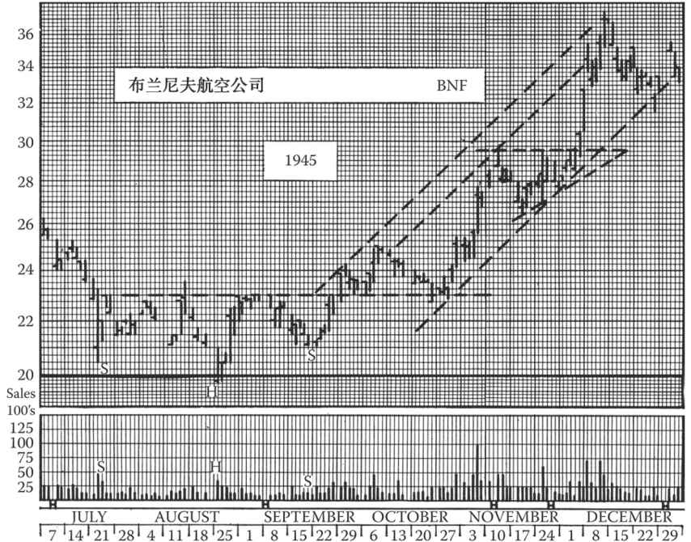
图33-2 布兰尼夫航空公司在1945年的头肩底走势。严格地说，这是在牛市的二次修正后所出现的持续头肩走势。通常，长期熊市的长线底部需要较长时间才能构筑完成。
在图上我们可以看到，左肩出现放量，头部交易量较少，右肩只有微量交易。9月21日出现突破走势，涨幅较大。突破之后在颈线出现一次回踩，伴随交易量逐步下滑，此刻是在23美元买入的好时机。上升走势随后恢复，在颈线支撑位再次出现回调。此类二次回调并不稀奇。10月19日出现22¾美元的收盘价，这一点位低于前期的短线底部，且伴随交易量上升，对走势有一定的干扰。但考虑到形态和突破的强度，我们不会卖出该股票，21⅞美元的保护性止损位也未被击穿。10月25日涨势恢复，出现突破缺口且一直延伸到29½美元的位置，至此该走势以一个单日反转和衰竭缺口收尾。
请注意，股价触及29½美元后，进入了为期3周的整固期，形成了一个上升三角形，随后跳升至37½美元。此外，该上升三角形在接近整体涨幅中点处形成，这一点也值得注意。股价快速变动过程的“中点”形态对我们来说并不陌生
需要注意的是，虽然投资者可以用一部分的仓位做对冲，但大部分资金仍应配置在符合长线趋势的仓位中。投资者不应将资金的大头用于与长线趋势相反的交易中，并且在做反向交易时应明白，此举的目的在于“买保险”，即使有时平仓会带来小额损失。
让我们总结一下道氏理论带来的几条重要经验：勿将资金大头用于和长线趋势相反的交易中；在趋势有可能反转时，逐步调低多头仓位，且仅做空少数弱势股票；勿将全部资金用于反向交易，以期抓住平均指数的长线顶部或长线底部。
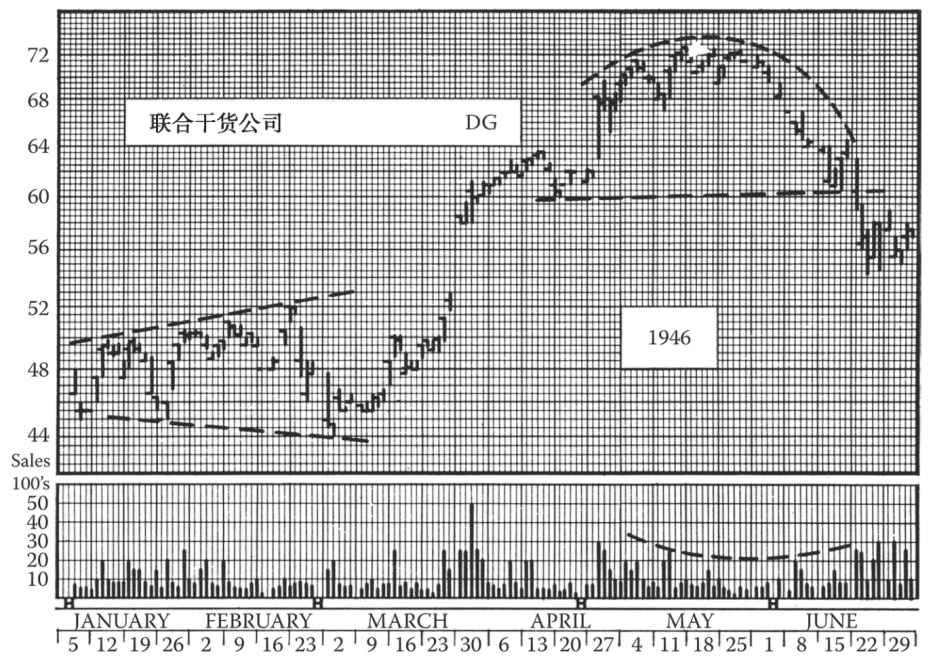
图33-3 联合干货公司的走势在牛市中以一个圆顶告终。该图为这只股票在1946年上半年的日线图。
从月线图来看，联合干货公司股价从4美元升至72美元仅用了3年半，呈现平滑上升走势，在该趋势出现之前，股价1938～1942年一直维持长期底部形态。
在到达最终顶点前的6个月里，1、2月的股价运行值得我们留意。联合干货公司在1945年第4季度刚刚完成了一次快速拉升，接下来可能出现整固和二次修正。在升至48美元后，股价回落到45美元，随后升至50½美元、51美元，直至52美元，之后股价在2月底回落至44美元。如果1月22日的走势继续下行，收盘价低于1月3日的低点，并且在2月26日收于更低点位，那么1、2月的形态将被看作一个完整的扩散顶，即确定的反转信号。然而该形态并不完整，因此不是一个有效信号。此类不规则的价格运行表明初期趋势并不明显。
当散户参与增多，股价在最后几个阶段内迅速放量上涨并不足为奇。从该图中可以看出这一现象：3月25日出现了5个点的突破缺口，随后股价上涨并在63½美元处回调，之后再次上涨至68美元以上。
之后，股价缓慢爬升，预示将出现收敛趋势以及连续的“头部”和“肩部”，当触及顶部后，交易量开始下降。6月4日股价下跌至5月7日短线底部以下，并伴随交易量上升，形成一个圆顶，如果此刻仍有多头仓位，则建议立即抛售；6月18日的“颈线”突破是一次决定性的突破
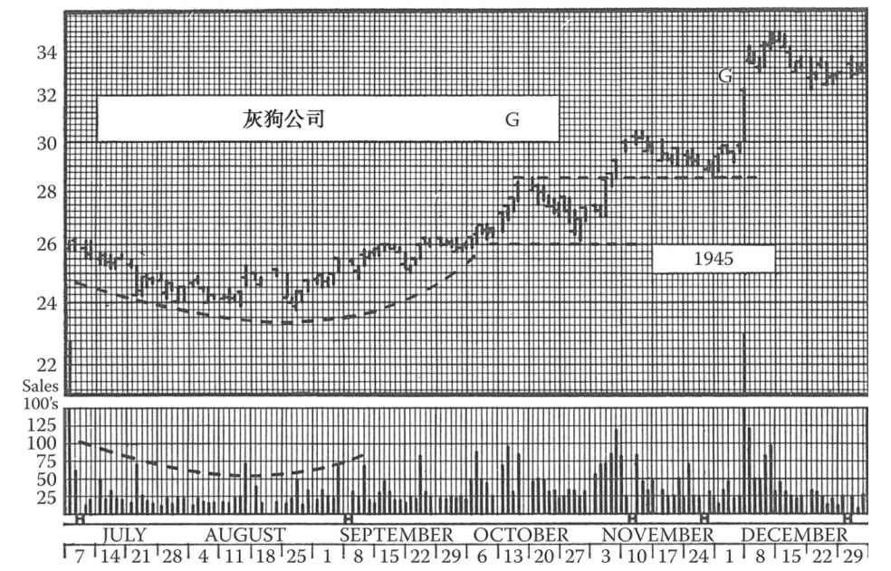
图33-4 灰狗公司股价在1945年走出圆底形态。股价5月上涨至29美元后，走出持续形态，后回调至24美元的阻力位，这是1944年的高点。
7月，股价下跌时，成交量放大，后陷入低迷，直至8月。8月10日，成交随股价上涨放量，后再次陷入低迷。
8月和9月的股价波动不足以形成任何交易的条件。8月31日，股价在形态内创新高，预示股价将转而上攻。9月19～20日，股价再次上攻至26美元。但此时仍没有任何决定性的信号出现。
10月13日之前一周的股价变动给出了决定性的线索。股价垂直上涨，突破“碗形”，且成交放量。虽然涨幅不算大，但已经清晰地预示了未来的趋势。我们接下来应寻找买入该股的最佳时点，比如股价的回调幅度达到从底部到高点这段距离40%～50%的时候，或股价回调至26美元的支撑位时。我们可以将26½美元作为买入点。请注意股价回调至该价位时，成交量的萎缩。
股价随后立即上攻至30美元，创牛市新高。11月3日，股价随天量收于30美元。因为该成交量并未出现于突破日，且股价周一已到达29⅞美元的紧密止损位，我们应该已经平仓（除非我们调高了止损位，等待下一波短线回调和另一波涨势）。
2周后，根据回调至支撑位的原则，我们应该于29美元再次买入该股（在任何回调中，你都无法等股价降至最低点时买入）。股价在两天内就涨到了34¼美元。此时，投资者应该已经获利了结或打算长期持股。该股最终涨至54美元
33.1 头肩顶
A.如果你正在做多某股票，那么一旦股价跌破颈线，收于颈线以下至少3%处，那么次日一早，你就应在比前一日收盘价低1/8美元的价位下达止损指令。如果第1天股价没有触及止损位，那么在第2天继续下达此类“紧密跟进止损位”，位置依然比前一日收盘价低1/8美元。每天这样继续下去，直到股价触及止损位。
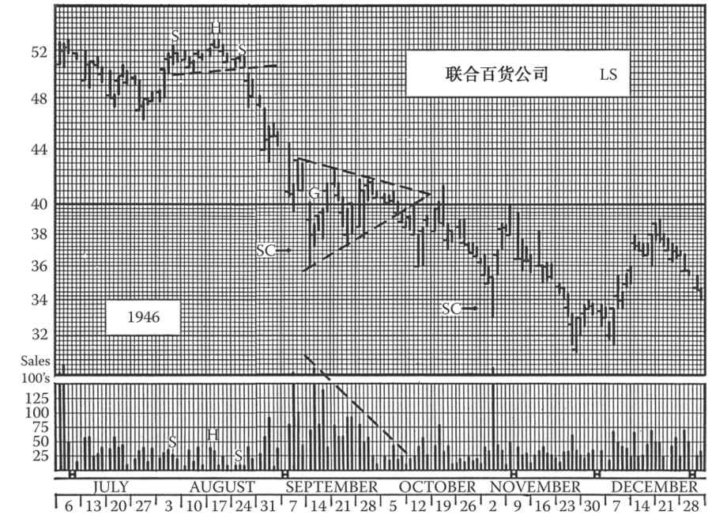
图33-5 联合百货公司股价在1946年的跌势中走出了一个对称三角形，这是一个整固形态。请注意，9月10日，该股股价暴跌至形态第一个反转点时爆发出的天量。此后，股价在三角形内波动时，成交量逐渐萎缩。在圈叉图中，类似形态称为钟摆走势，与钟摆渐渐停摆的表现相似。有时，成交量会在每个反转点放大，但有效的三角形会展现出成交量逐步萎缩的特征。
如果你恰好此时持有该股，那么你应该在33⅛美元处设置保护性止损位，即36美元的底部以下8%的位置。10月4～5日（周五和周六），股价向下突破三角形，虽然成交量不大，但确是有效突破（向下突破不需要成交量的配合）。所以，你有理由在周一立刻清仓，以38½美元的价格成交。如果要做空，那么你就必须等股价向下突破三角形至少3%。股价反弹到形态边界40美元处的这波走势非常有趣。你会发现，随着股价在10月9～10日持续下跌，成交放大。
该突破并不存在假突破的可能性。我们应在股价反弹至三角形下界线时做空，或股价反弹幅度达到突破幅度的40%～50%，即38½～39美元时做空。股价反弹至三角形顶点价位后，迅速跌至33美元。在这个价位上，10月30日出现了抛售高峰和单日反转，这是获利了结的信号。
请注意该股在8月走出了一个小头肩顶。这是一个持续形态，代表了这波涨势已见顶，随后股价在9～10月大跌
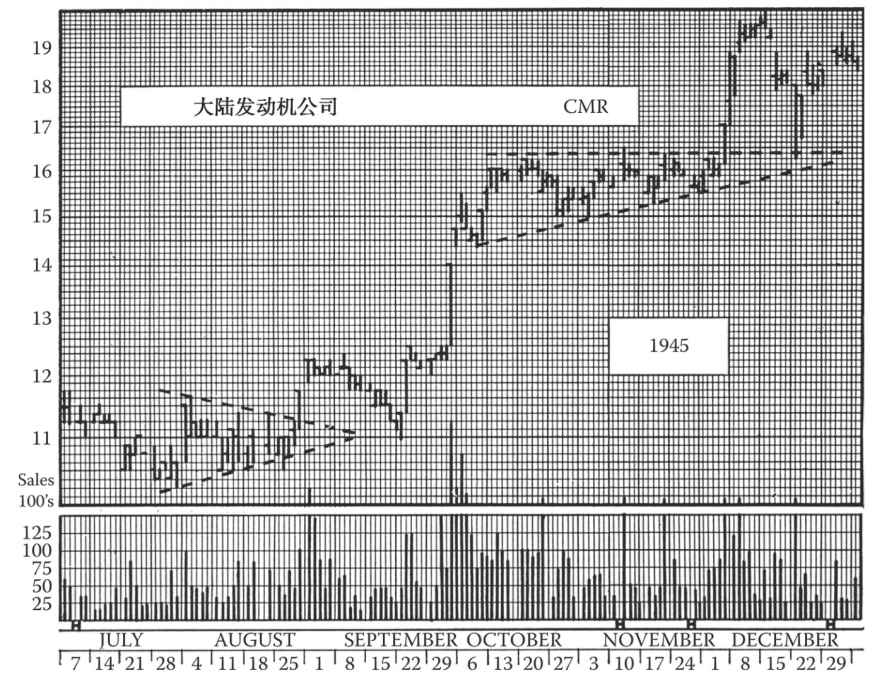
图33-6 本图展示了一个上升三角形。大陆发动机公司股价走出1943年的阴霾后，于1945年年初到达12美元。在1945年1～8月，该股走势在月线图上展现为一个上升三角形，顶部在12¼美元。但在日线图上，我们可以看到该形态的细节。例如，该形态在8月出现了最后一波回调，这波回调以对称三角形的形式出现。对称三角形被突破后，股价上攻至最小涨幅目标，即12¼美元的顶部。随后，股价出现回调，止步于11美元，即三角形顶点。三角形被突破后，如果我们在股价回调至11½美元时买入，且设置了跟进性止损位，那么该股会在股价于9月28日到达14美元时被自动卖出，直至股价于10月2日到达14½美元。这笔交易会为我们带来可观的收入。
此类获利了结的交易可以解释涨势的终止以及另一个整固形态的形成。这是一个上升三角形，顶部为16¼美元，持续8周。请注意，11月7日股价突破16¼美元时的成交量，但最终股价收于三角形内。11月30日，三角形被决定性突破，请注意此时的成交量。突破后，股价涨至20美元，我们应该在股价回调至18美元或更低时买入。该股在下一波走势中达到牛市顶部：1月，股价触及24美元。在比例坐标图上，上升三角形的顶部刚好出现在9月底部（11美元）和最高点（24美元）之间的中点。这类出现在中点的整固形态常常以旗形或三角旗形的形式出现。本图也是一个经典的图形表现
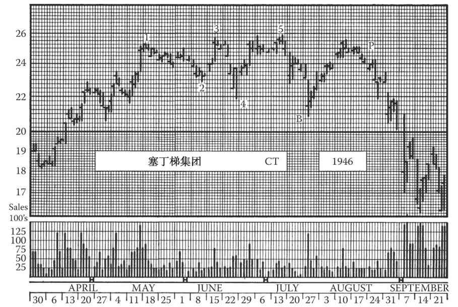
图33-7 本图展示了一个扩散顶形态。这种形态不太常见，但塞丁梯集团公司在1946年牛市顶部走出的扩散顶十分可靠。我们迅速扫一眼成交量变化，就会发现，成交量在涨势末期放大，顶部形成时低迷，形态被突破后再次放大。
我们现在已经了解（可参阅第10章的内容），扩散顶是一个5点反转的形态，不同于头肩顶、三角形、箱体和其他形态。在扩散顶中，每个反转点必须是该形态的新高点或新低点。你可以将其看作一个左右对调的三角形，三角形顶点在左边，且股价振幅越来越大。
5月第2周，该股以25¼美元创牛市新高（标记为“1”）。随后股价回调至支撑位，即前期短线高点（标记为“2”）。接下来的一周，股价再创新高（标记为“3”），在前期顶部以上1/8美元的位置。
接下来一周，该股股价跌至点“4”，收于22½美元，即点“2”以下3/4美元处。这不能成为我们做空的理由。3周后，该股收于25⅝美元，即点“5”，再创新高。最终，股价在7月23日跌至21½美元，此时（标记为“B”）扩散顶完成。请注意，形态内每个反转点出现时成交量放大。
如果你持多头仓位，那么你应该在形态被突破后的第2天立刻卖出。但如果是做空，那么你应该等到股价反弹幅度达到点“5”到点“B”的40%～50%时再交易。如果我们在23美元处做空，那么就不必担心股价达不到新高。该股后续持续下跌，先跌至15½美元，后在12个月内跌到了11½美元
B.股价向下突破形态之后，当修复达到自右肩高点至突破走势低点之间距离的40%时，或者当修复达到一条穿过头部高点和右肩的直线时，或者当股价反抽至颈线时，就可卖空股票，具体以三者中首先到达的价位为准。如果向下突破走势延续多日，那么上述40%的修复应以自右肩高点至最低点的全部跌幅为基准。
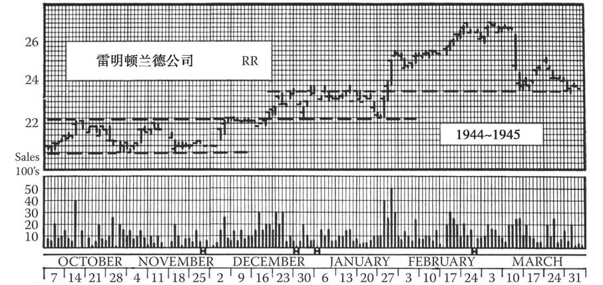
图33-8 这张图上，雷明顿兰德公司构筑了多个箱形。在这轮1942～1946年的大牛市中，该公司股价从10美元以下攀升到了50美元以上。从月线图上看，最后3年涨势连绵不绝，没有任何大幅回调。而在日线图（比如这张1944年年末至1945年年初的图）上，我们能看到涨势并非连绵不断，而是由建仓形态的一级级上升“阶梯”累积起来的。每次放量上攻之后，都有一段缩量休整及小幅回落。
此类图表表明，大规模建仓的长线投资者试图避免因“打草惊蛇”而引发股价飙升。每一波上攻之后，都可能涌出一批获利盘，导致股价回调，并吸引投资者再度建仓。
在10月和11月，该股在20¾美元和22美元之间构筑了一个明显的箱形。你可在箱形下沿附近买入，比如于11月14日股价第5次反转至21美元时。12月2日那一周，股价突破形态，但未收于形态以外3%处；大约两周以后，股价向上有效突破，并得到了成交量的验证。请注意在12月20日，随着股价接近高点，成交量放大，股价出现单日反转。你可在股价正常修正至22½美元时买入，并预期22美元处为支撑位。股价果然止跌于22美元，但随后并未突破23¾美元，在两周时间里3次触及这个高点，然后回落至22¼美元。
1月25日的突破毋庸置疑。这次突破的幅度和成交量都是决定性的。请注意次日的缺口和单日反转，短线涨势在这天结束。
3月中旬，该股自27美元高点跳水，但跌势止于1月箱形的上沿位置，此处是一个强支撑位。此后该股未再考验这个支撑位，该股从4月开始上扬，一直涨到1946年才见顶
33.2 头肩底
编者按：因为长期以来对“头肩底部”这个术语的自相矛盾感到不满意，本编辑建议这个形态在技术分析命名法中应当重新取名为“基尔罗伊底部”（见图7-4）。
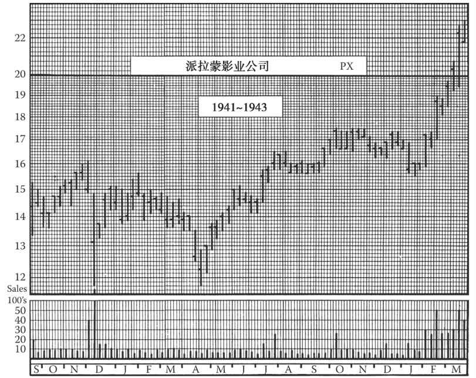
图33-9 这张图上，派拉蒙影业公司构筑了一个双底形态。双顶和双底并不像许多交易者所认为的那样常见。双顶和双底需要相当长的时间才能形成，必须符合有关价格范围和时间的要求以及有关成交量的要求（这点仅适用于从双底中向上突破）。与日线图相比，周线图更便于辨认双顶和双底。
这是派拉蒙影业公司自1941年9月至1943年3月的周线图。珍珠港事件引发恐慌后，该股放量下跌至11¾美元低点。随后该股连涨8周，回升至15⅝美元，但回升的过程中成交清淡，意味着该股很可能跌至更低水平。这次回升的幅度相当大，达到了12月低点价格的35%左右。
然而，延续至4月中旬的跌势伴随着成交清淡的局面，且正好止步于12月的低点11¾美元。（注：此类走势并不一定要止步于同一价位；第二个低点可以略高或略低，只要不破坏形态。）
7月第2周该股放量上攻，初步显出反转迹象，但未能收于15⅝美元以上，因此未构成突破。两周后该股再次放量上攻，触及16½美元，收于16美元，这是真正的突破。从这点开始，应逢低买入。
随后该股的涨势持续了3年，达到85美元的终极高点
A.如果你正在做空某股票，那么一旦股价放量上攻，收于颈线以上至少3%处，那么次日一早，你就应在比前一日收盘价高1/8美元的价位下达回补指令。如果第1天股价没有触及止损位，那么在第2天继续下达此类“紧密跟进止损位”，位置依然比前一日收盘价高1/8美元。每天这样继续下去，直到股价触及止损位。
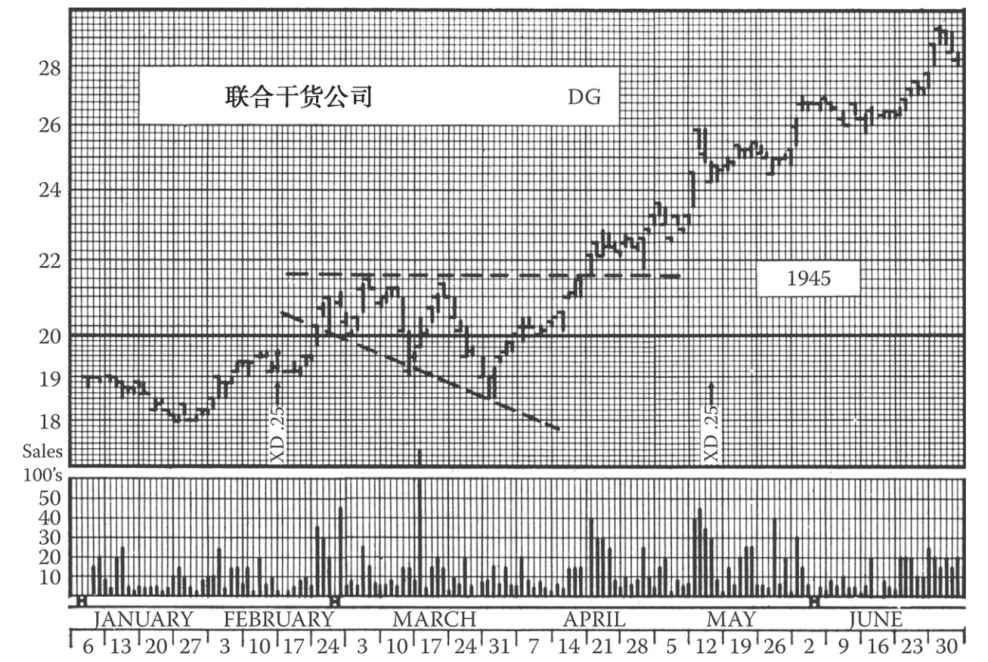
图33-10 这张图中，联合干货公司构筑了一个直角扩散形态。股价完美地突破了复合顶形态，然后出现了一段重要走势。不过，交易者很难把握这样的走势。该股先前于1938年、1940年和1942年在4美元附近构筑重要底部后回升。在本图所示的1945年，该股正在开始加速上扬。后来，该股于1946年在70美元以上构筑了一个圆顶（见图33-3）。
如果你曾持有该股票，那么在股价从12美元涨至20美元后，你可能担心出现大幅回调。在2月末、3月第1周，该股展开了新一波上攻，之后回调到19～19½美元一带的支撑位，接着在3月17日那周再次上攻，但未能再创新高。10天后，该股已回落至18½美元，收于前一短线低点之下。此时，缺乏经验的观察者可能认为该股已经构筑双顶，因此立即抛出该股，甚至反手做空。然而，这个形态无论从时间跨度还是价格涨幅上来看，都称不上是双顶；它也不符合任何其他可辨认的反转形态。此外，成交量也未达到重要顶部应有的规模。
该股4月初开始反弹，决定性地突破形态达3%以上，于4月18日升至22⅞美元。这波涨势几乎要突破中线顶部，确认了上升趋势。此时如果你依然持有该股，那么你已获利丰厚，但你应继续逢低买入。如果你试图在21½美元的支撑位买入，那么你会错失良机；而如果你将买入价设在22美元，那么当股票涨到25⅞美元时，你就可能已在25¾美元的紧密跟进止损位卖出股票，大赚一笔
B.股价向上突破形态之后，当修复达到自右肩低点至突破走势高点之间距离的40%时（此段修复行情须缩量），或者当修复达到一条穿过头部低点和右肩的直线时，或者当股价回踩至颈线时，就可买入股票，具体以三者中首先到达的价位为准。和在头肩顶中一样，如果头肩底的向上突破走势延续多日，那么上述40%的修复应以突破行情的全部涨幅为基准。
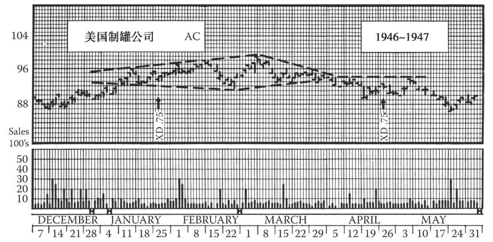
图33-11 这张图上，美国制罐公司构筑了一个钻石形态。这张日线图涵盖了1946年12月3日至1947年5月这段时期。之前，该股在1945年10月达到了牛市顶点112美元。我们说过，优质、高价的股票在牛市末尾阶段往往率先见顶。该股第一波下跌到达了90美元附近，接着反弹到106美元。然后该股跌到了80美元以下，接着出现第二次反弹，就是此图上的走势。
你会一眼发现，该股的走势呈渐变的“圆形”，原因是这个价位上的保守型股票一般不会大幅波动。如果换成垂直间隔更大的坐标系，那么该股的形态会很像投机股。
形态的第一部分颇似一个扩散顶。股价到达第1个短线高点96美元后，回调至92美元。第2个短线高点更高，为98美元；之后的回调到达了91¼美元。第三波反弹中，该股涨到了99美元。到现在为止，我们有了扩散顶的5个反转点，只要股价收于91¼美元以下，就能确认熊市信号。然而，随后的跌势未能突破形态，该股用几周时间构筑了一个类似于对称三角形的收敛形态。
最终该股向下突破，跌到了89美元，这是卖出或做空的信号。从此时开始为期3周的反弹未能突破94美元的阻力位，该阻力位正是钻石形态最后部分两条收拢界线的交点。
从这点开始，该股没有大幅下挫，原因可能包括该股的先前幅度、该股的习性与价位、市场的大气候等。但是，该股也未能回升到前期的水平，而是跌到了80美元。
钻石形态不是一种普通的技术形态。它有点像复杂头肩形，只不过颈线是弯曲的。它起先颇似一个扩散顶，后来的收敛阶段则颇似一个对称三角形
33.3 复杂或复合头肩形
适用于简单头肩形的战术建议也适用于复杂头肩形。后者的定义和特征已在第7章中介绍。
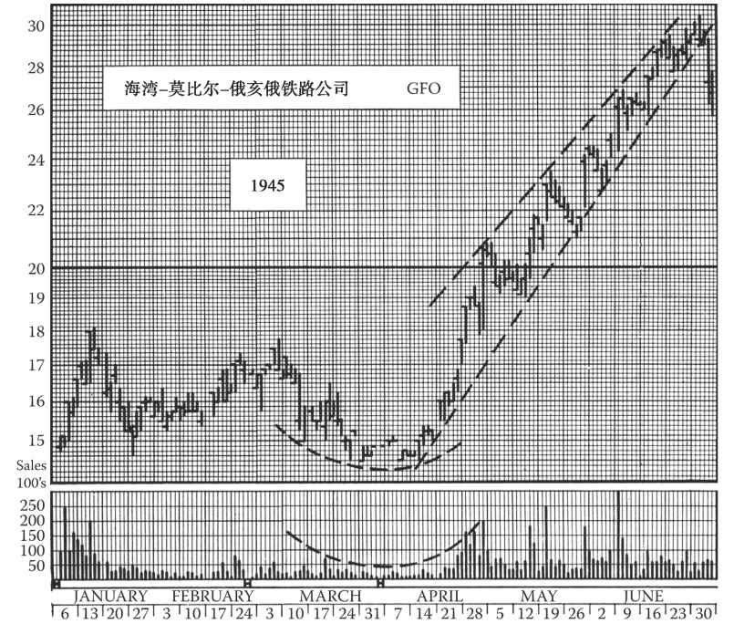
图33-12 如图所示，在1945年上半年，海湾-莫比尔-俄亥俄铁路公司走出了一个漂亮的楔形形态，并以此终结其大幅上涨的走势，构建了最终的牛市顶部。
随之而来的是从楔形开始的下行突破，GFO的股价也于8月下跌至中线低点，即18¾美元。随后，股价上涨，开启长线箱形震荡，范围在23¾美元至26¾美元之间。最终，股价节节败退，1947年5月竟然只有6⅛美元一股！
对于此类形态，我们很难看出究竟哪个点是趋势收敛的确认点。4月下旬的突破走势是正常现象；接下来的回调被认为是一个买入信号。5月股价上涨至23½美元，但并未建立平行趋势线通道，在回调时，股价下行并趋于收敛。接下来的3次上涨反复确认了楔形走势。在顶部，股价上涨迟缓并出现密集拉锯。可能的情况是，于6月4日和5日结束的短线走势顶部出现了放量交易，某位谨慎的多头持仓交易者随后在11美元的位置获利了结。该交易者也完全可以一直维持保护性止损位，并在股价出现下行突破时离场
33.4 圆顶和圆底
对于圆顶和圆底这些趋势逐渐变化的形态，很难设定精确的交易规则。对于圆顶，如果你正在做多某股票，那么时间跨度长达数周的圆顶形态大体上浮现出来时，并且成交量在股价上行过程中萎缩、在股价下跌过程中放大时，你就应立即卖出该股票。对于圆顶，做空可带来丰厚利润；但在缺少固定基准点的情况下，你需要非常准确地判断形态是否是圆顶。圆顶形态应该很完备，有较长的上升阶段，且时间跨度长达数周。如有关止损位的那章所述，你需要在曲线的高点上方设置止损位，从而保护自己。
我们一般不会在圆形底部做空股票，长而渐进的圆形走势通常伴随清淡的交投，随后便会突然上涨并伴随放量交易。因此，如果你对当前持仓有疑虑的话，这一长而缓的圆形走势足以构成回补的信号。如果一只股票的价格在经历了长期、乏力的休眠期后，走势急转并出现圆底或碟形形态，则可以确定买入时机已到。根据我们之前确立的逢低买入的规则，买入时点并非在股价突破时，而是在随后出现的回调中。
33.5 对称三角形
A.在已经建仓的情况下 。在对称三角形形成的过程中，你也许可以对持仓进行更改。假如你在上涨中逢低吸入。如果下一次的上涨未能建立新高，且交易量不足以构成卖出信号，而下一次的回调也未能创出新低。此时的你“受困”于三角形中，由于该三角形可能最终会突破原有趋势并带来盈利，因此你无法在当前点位安全地卖出（而事实的确如此）。一旦出现突破走势（存在上行空间且交易量上升），则可以获利了结（根据本书所述的交易规则）并对卖出点位及时进行标注，以便在下一次回调时重新买入。如果出现下行突破（无论交易量是否上升），且收盘价位于三角形之外，则需要确定第2日的紧密止损位（1/8美元点）以自保。我们需要在每天的收盘价以下持续设定紧密渐进止损位，直到卖出该股。
如果看空该股票，则可运用同样的反转规则，不同之处在于：正确方向（即下行方向）的突破不需要交易量来证实，而反向突破（上行）则需要放量交易来证实。
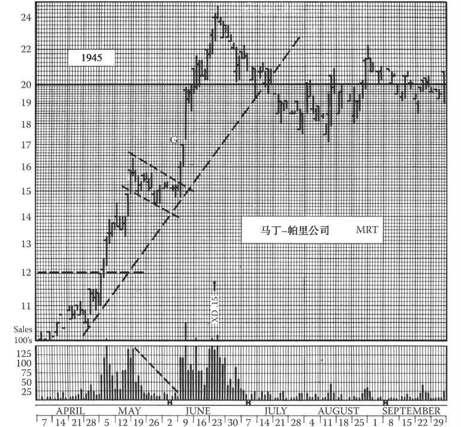
图33-13 马丁-帕里公司的三角旗形。这一形态类型在运行较快的市场中较为常见。旗形（有时是快速运行中的其他整固形态）的特别之处在于，它们常在底部和顶部区间的中间位置成形。
在该走势出现之前，股价已经在10～12美元之间构建了一个箱形，并维持了7个月。这一形态出现在1944年股价从4美元上涨到12美元之后。5月的突破走势伴随放量交易，并令股价升至旗形顶部，且未出现较大回调。请注意上涨顶部的放量交易，从图中可以明显看出，股价曾经连续3天跳升，而交易量却不断枯竭。该形态并未对初期走势做出修正，反而确立了14½美元的短线峰值这一支撑位。
走势随后突然恢复，并伴有放量交易。这一次，股价急升至24¾美元。当股价在6月6日达到19⅞美元时，该股票出现放量交易，原来做多或在旗形信号出现时以15美元买入的交易者们也可能会离场
B.如果尚未建仓 。请远离任何出现对称三角形走势的股票，除非出现清晰、确定的突破性收盘价。一旦出现突破，如果有上行空间且长线趋势向上，则可以在下次回调时买入；如果有下行空间且长线趋势向下，则可以在下次上涨时卖空。关于此类建仓规则，可参考之前章节。
注意： 如果对称三角形不断收窄直至顶点才出现突破，则应尽量避免此类突破。最可靠的突破点通常出现在三角形走势约2/3处。
33.6 直角三角形
对称三角形规则也同样适用于直角三角形（参见第8章“重要的反转形态：三角形”）。早期的突破更为可靠，这一点和对称三角形类似。对上升三角形来说，放量交易的证实对上行突破更为重要，但对下降三角形的下行突破来说，则不一定需要交易量的证实。持仓可以一直保留直到出现突破，届时可以获利了结并离场。
上升和下降三角形的方向预测性较强，而对称三角形则不具备这一特点。我们可以在上升三角形形成过程中加仓，或在下降三角形出现行情时加仓。这些三角形较为扁平的一边通常表明供给或需求尚不明朗。因此，在水平侧被显著击穿之前，三角形可能会被反转，鉴于此，较稳妥的策略是：持续关注该形态的发展，直到出现确定性突破后再加仓。
33.7 扩散顶
通常，你不会做多一个扩散的顶部。如果遵循前述的趋势线战术规则，你可以在该形态形成之前做多，并在形态的早期反转点离场。由于有明确迹象表明不宜进行任何操作，我们一般不会在顶部扩散的形态中买入。
另一方面，已成型的扩散顶部会为我们带来绝佳的卖空机会。如果出现下行突破，且收盘价位于该形态第4个反转点之下，则可以放心地进行卖空，卖空点位于终极顶部（第5个反转点与突破走势的最低点之间40%的上涨处。止损点位于第5个反转点（即形态的终极顶部）以上的合适位置。
图33-14 利哈伊谷铁路公司（LV）1945年年末和1946年年初的日线图中出现了各种缺口。在这一特定时期，LV的股价完成了二次调整，随后再次试探1945年的顶部，刚好突破17美元的位置。这一长线走势也许可以用来解释双顶形态，由于干预性走势的底部在1946年夏天被击穿，股价之后持续下行走势并降至5美元以下。
并非所有的缺口都是有意义的，10月3日的第一个缺口出现时，股价窄幅波动且交投清淡，该缺口并没有实质作用。然而，11月3日的缺口很重要，原因是周六的交易量（加倍）很高。尽管收盘价未能实现3%的上涨并创出新高，即实现真正意义的突破，但该走势带来了牛市信号，并为短线回调时的买入提供了充分的理由。其他交投清淡的回调缺口并无实质意义。
直到1月的第3周，才出现带来真正突破的又一缺口。1月14日出现放量交易，LV股价上涨并于1月16日迅速升至15⅞美元，收于15½美元。放量交易的再次出现提示应进行渐进止损，且多头仓位应在15⅜美元处离场。
新钱可以在回调时以14½美元买入。第二次上涨同时伴随着1月23日出现的突破缺口。如果将第二缺口（出现于1月24日）视作一次逃逸或测量缺口，则可以预测此次走势可能出现的顶部为17¾美元上下。当1月28日出现第三缺口并伴有单日反转和天量交易时，则可以判断该走势即将终结，此时可以通过渐进止损位以16¾美元将多头清仓。
请留意：在LV未能守住15美元点位时，出现了暴跌之后的上涨试探以及两个缺口组成的单日岛形形态
33.8 箱体
A.如果你已经持股 。箱体早期的股价变化无法提供离场的信号，而且在箱体形成期间，也不会有“突破”信号来让你获利了结。但只要箱体的特征明确出现（这需要至少4个反转点来确定一个清晰的顶部和底部），你就可以在顶部附近卖出，在底部附近买入。因为箱体和对称三角形一样，常常预示的是趋势的持续，而不是反转。这也就意味着，你会放弃第一个离场机会（即第5个反转点），继续持仓，希望股价继续沿形态出现前的反向变动，这对于你的持仓来说是“正确”的方向。如果股价按“正确”方向突破箱体，那么你可以根据前述的交易规则离场。如果股价按“错误”方向突破箱体，那么你可以设置紧密（1/8点）跟进性止损指令，这与三角形的交易方法相同。
B.如果你还未持仓 。在箱体的第5个反转点和随后出现的反转点，可以开始交易。由于箱体被突破后，股价仍可能沿箱体出现前的方向变化，你最好等到第6个反转点出现后再买入。如果要做空，那么你就要等箱体被向下突破，或放量向上突破之后。在箱体被突破后的股价调整阶段，我们既可以做多，也可以做空。
33.9 双顶和双底
双顶、复合顶、双底和复合底的有效性要等形态最终明朗之后才能确认。第9章详细介绍了此类形态，投资者应仔细阅读。
A.如果你持多头仓位。在股价跌穿复合顶形态的最低点，并收于该价位之下时，使用紧密（1/8点）跟进性止损指令抛出持仓。
B.如果你持空头仓位。在股价突破倒碗底形态或双底之间的最高点，并收于该点之上时，使用紧密止损指令平仓。
C.如果你还未持仓。股价突破顶部（或底部）之间的调整走势的最高/最低点，并收于该点之上/之下，可将此视为反转信号，并在回调或反弹中途建仓。
33.10 直角扩散形态
股价突破水平界线时，我们可遵循与多顶、多底、直角三角形相同的操盘方法。
33.11 钻石形态
如果你确定有效的钻石形态已出现，那么操盘方法应与对称三角形被突破时相同。对称三角形出现后，你应等到形态被明确突破后再交易。如果你之前已经持仓，那么也应等到形态被明确突破，根据突破预示的方向（反转或持续）进行相应的操作。
33.12 楔形
对于楔形内部或该形态形成过程中的股价走势，我们不需要界定额外的操作规则。我们只需遵守趋势线、支撑位/阻力位的操作规则，就可以在两条线呈现出交汇的迹象时及时逃离该形态。即使做最坏的打算，你的止损指令（希望你能始终设置止损位）也会帮你在情况变得过于严重之前离场。
买入（下降楔形被突破后）或卖空（上升楔形被突破后）之前，我们应注意成交量的变化：下降楔形被向上突破时应伴随成交明显放量，而在上升楔形被突破的早期，成交量不会有显著变化。新的买盘或卖盘可以在股价明显突破并远离楔形界线，后又反弹或回调时，进行交易。
33.13 单日反转
单日反转与我们此前讨论的反转、整固形态不同，其本身并不是适合交易的技术形态。单日反转主要是作为一个参照物，让我们精确地定位某个短线趋势的顶部或底部，从而保护前期的盈利。单日反转、衰竭缺口以及短线趋势运行一段时间后成交突然放量的交易日都预示着该趋势可能已接近尾声。这3个信号中，出现了任何1个，我们都要密切注意；如果2个信号同时出现，那么预测的效力自然是强于单个信号；如果3个信号都出现，那么就强烈预示了短线（编者按：甚至是长线）顶部或底部。
根据单日反转来交易更像是赌博，或者说是抓短线赚快钱的行为，这和本书大部分内容介绍的交易截然不同。本书第10章介绍了单日反转的影响，并对于根据该形态交易给出了一些建议。
33.14 旗形和三角旗形
涨势中的旗面形成后，股价常常会下滑到一个我们可以买入的价位，换句话说，股价可能跌至基本（红色）趋势线、蓝色平行线或是跌去旗面出现前“旗杆”距离的40%～50%。如果“旗杆”这段涨势是股价横盘或缓慢上涨之后的第一次急涨，且市场正处于牛市，那么我们就有理由在股价跌至蓝色平行线时立刻买入。随后，股价很可能会继续下滑一阵，但我们还是要尽早进场，因为后续的下跌很可能时间短、幅度小。在这种情况下，成交量必须大幅萎缩，且持续低迷。旗形形成的过程中，成交一旦放量，我们就要质疑该形态的有效性，除非放量出现在形态被突破时。形态被突破时的势头一般都非常猛烈，我们只要设置紧密止损指令，即可安全离场，具体位置是在旗形或三角旗形形成过程中，成交突然放量那天的收盘价以下1/8点处。因此，如果成交量预示形态失效，我们即可立刻平仓；但如果形态确立并被突破，那么我们可以继续保留仓位，因为股价一般会开启涨势，且不出现回调，常常在图表上留下一个逃逸缺口。
在跌势中，即市场处于熊市时，我们可以采取和上文相同的交易方法，仅有一处差异。旗形走势中，股价最后达到最高点时，成交可能放量，且出现衰竭缺口或单日反转。如果在成交放量、缺口或单日反转出现时，我们做空，那么我们同时应该在旗形最高点之上设置止损位，以防涨势打破预期，持续下去。
在涨势或跌势中，我们会发现一些有水平顶或水平底的旗形，即箱体。如果成交萎缩，且其他特征也符合旗形整固形态的特点，比如旗形之前出现急涨或急跌，那么我们就有理由在第6个反转点，或形态内任何一点进行交易（此类形态不可能长时间持续）。
如果旗形或三角旗形持续时间过长（比如历时3周以上），那我们就要质疑该形态的有效性。我们应该在形态的最高点或最低点（视情况而定）附近按照计算规则设置止损位。旗形整固形态的失效并不罕见，这对投资者也是个考验，因为投资者常常希望该形态最终能得以确立。因此，我们有必要定下3周的期限，以防股价逐渐回归之前确立的止损价位。另一方面，该形态的正常突破常常是短时间内获利最丰的股市行情。
那么现在的问题是，如果你在股价走出旗形或三角旗形形态时已经持仓，该如何应对？显然，如果你持的是多头仓位，且旗形出现之前股价处于涨势，那么你就应该保留持仓；如果之前股价处于跌势，且你持有空头仓位，你也应该保留。当然，如果你严格遵守交易规则，这种情况一般不会发生。在大多数情况下，“旗杆”形成时就会发出设置紧密（1/8点）跟进性止损位的信号。在“旗杆”形成过程中的某一点，比如说旗杆的最高点，你就已经被平仓（虽然通常投资者并不会这么幸运）。
但是，如果该信号没有出现，你在旗面成型时仍有持仓，那么最好继续保留持仓。原趋势持续的概率比反转的概率更大。
如果你持多头仓位（在牛市中），看到旗形被突破，股价创新高，比如自20美元涨到32美元，且在30美元处被平仓，后股价再次上涨、停滞、下滑，并伴随着前期的高成交量极度萎缩、几近消失的特点（必须是大幅萎缩），那么你就有理由再次买入，即使此时买入价格比之前平仓的价格更高。
33.15 缺口
如果你正在做多一只在完好形态或狭窄通道中运行的股票，而它突然放量向上突破，留下一个缺口，那么这是一个做多信号。你可继续持有该股，直到其涨势出现衰竭迹象，或者成交量再度放大，或者该股出现又一个缺口或单日反转；此时，特别当两个或三个此类现象同时出现时，你就应设置紧密跟进止损位来保护仓位。当第二个缺口出现时，你需要判断它是衰竭缺口还是持续缺口，判断依据是成交量和上涨速度，如关于缺口及其测算涨跌目标的各章所述。
通常，股票出现突破缺口后，无论你是否在下一个短线高点卖出，你都应判断当前走势为牛市，并在下一波回调时买入。
如果你正在做多一只股票，该股连续飙涨数日后出现一个缺口，那么你必须判断它是不是一个持续（逃逸）缺口。若是，则你应准备持有该股，等它再上涨一段（约等于缺口前的涨幅）后才卖出。在该股接近最终目标位的过程中，你应密切关注，一旦出现反转信号，就要设置紧密跟进止损位来保护仓位。
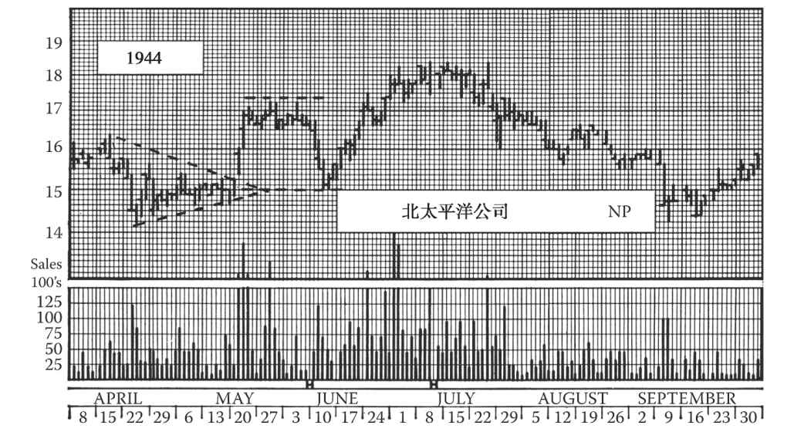
图33-15 这张日线图展示了北太平洋公司在1944年的6个月里的走势，其中有多个支撑位和阻力位。这张图只涵盖了1943～1944年该股一系列整固形态的一部分。该股后于1945～1946年一路上扬到了38美元以上。
事实上，本书中的图表大都包含支撑位和阻力位。这张图上北太平洋公司的支撑位和阻力位并无异常之处。
图上左边从4月开始，该股放量下跌至14¼美元后，回升到15⅝美元，止步于前两周的阻力位。构筑了一个对称三角形后，该股向上跳空突破，升至17美元，接着走出了一个为期3周的小箱形，最终放量向下突破箱形。鉴于下跌时的放量以及箱形的效力，这波跌势也许不应视为股价突破三角形后的正常回调。
但请注意，这次回调止步于15美元，正好是三角形顶点所在价位。随后股价回升。令人吃惊的是，该股只用了3天就攻克箱形下沿的阻力位，但在箱形上沿遇阻小幅回落。
7月的顶部可以分类为头肩顶或圆顶，实际上它几乎是一个箱形。股价向下突破后，在5月箱形上沿踯躅了一阵，然后继续下行，在4月的支撑位16美元附近再次获得暂时支撑，最终跌至15美元以下。虽然该股确实击穿了三角形顶点水平且收于其下，但击穿幅度只勉强达到3%；请注意该股于9月见底，之后一路上扬，1945年12月涨到了38美元
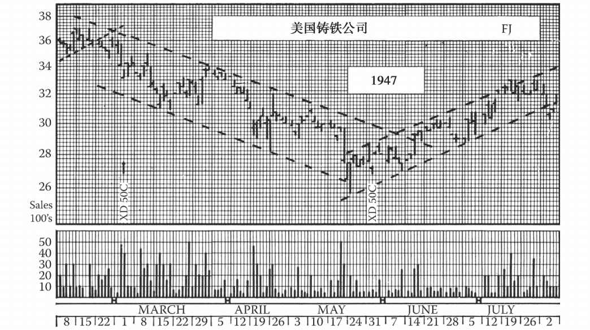
图33-16 这张图展示了美国铸铁公司的趋势线。这张图显示，趋势线倾向于沿着笔直的通道延伸。我们已经指出，这些通道往往事后容易发现，但当时很难辨认；股价很少沿着完美的通道运行，而所有的通道都有终点，且到达终点前往往并不发出警报。就此图而言，长线趋势通道确实给出了一个反转信号。
1946年，该股已从48美元跌到了30美元的支撑位。它从此处开始，沿着一条趋势通道反弹了3个月，在2月见顶于37美元。接着该股跌破了先前的通道，并在这波跌势的低点放量。如果你密切追踪整个图表，你会发现股票在几乎每个反转点上都会放量，而反转点通常是股价与趋势通道的接触点。此外请注意，下降趋势中的反弹往往止步于前期短线低点，上升趋势中的回调往往止步于前期短线高点。
这种情况下，可以顺势而为。该股的中线反弹延续到2月，接近1946年低点40美元一带的阻力位。股价从48美元跌到30美元后，展开修正走势，此时可在37美元卖空，而这些空头仓位可在首次下跌（3月1日那周）后在33¼美元回补。在34½美元建立的空头仓位可于3月15日那周在31½美元一带回补。3月22日那周股价反弹时可在33美元一带建立空头仓位，然后于4月19日那周在30美元回补。若4月19日那周在31美元再度建立空头仓位，则可于5月24日那周该股放量探底时回补。此处，巨大的成交量和股价的单日反转是对卖空者的警报。
幅度有限的中线上升通道在没有其他诱人理由的情况下，不足以吸引投资者大举做多
如果你判断股价飙升后出现的一个缺口是衰竭缺口，那么你就应立即设置紧密跟进止损位来保护仓位。
在熊市中，你可按相反的方向应用同样这些规则来卖空，但请记住股价向下突破不一定伴随着成交量放大。
当你正在做多或做空一只在形态内运行的股票时，若该股突然朝着不利于你的方向跳空突破形态，则你应立即按市场价结清仓位，或设置紧密跟进止损位保护仓位。
33.16 支撑位与阻力位
当你做多一只股票时，你不希望它跌破任何前期短线低点，也不希望它跌破已经越过的任何前期短线高点。因此，你应以短线低点和短线高点为基准点，将止损位设置在精心计算的价位，如第27章所述。正常情况下，最近一个短线低点大致位于最近一个短线高点的水平，所以这些基准点常常相互重合。因此在上升趋势中，我们应寻找最近形成的短线低点。当股价处于该短线低点当日价格区间上方达到3天时，你就可将止损位上移到这个新基准点所指示的位置。
这套做法也适用于熊市。“三天法则”既可用于确认由短期高点形成的基准点，也可用于确认由短期低点形成的基准点。但在通常情况下，使用短线高点作为基准点就已足够。
中线高点和低点可用于测算中线走势的目标位，因为前一高点构成中线回调的支撑位，前一低点构成中线反弹的阻力位。
复合顶是支撑位。复合底是阻力位。头肩形的颈线是支撑位或阻力位，具体视情况而定。对称三角形的顶点是强支撑位或强阻力位，其效力可能反复出现。任何震荡或横盘的区域都会形成支撑位或阻力位。
33.17 趋势线
我们已讨论了追随股票趋势的方法，以及利用高点和低点趋势线（基本线和折返线）预判牛熊、确定买卖价格的方法。
还有一个战术性问题，即如果你持有的股票虽然表现不佳，但是并未突破已辨识的形态，也并未跌破前一短线高点，此时你该怎样操作？这种情况并不常见，一旦出现却很棘手。假设长线趋势向上，某股票在一条平行趋势通道内辗转上攻，以一波较长的连续上涨确认了自己的升势，这意味着可在该股下一次回调时再度买入。于是你在该股回调时买入，但该股继续下跌，跌势延续几天乃至几周，期间没有可作为止损基准点的反弹、整固或修正。
在回调及前期大幅上攻的过程中没有明确信号的情况下，你的止损位应设在前期上攻的高点以下一段距离处。而若该股继续回调直至止损位，则你的损失异常惨重。
在此类情况下，你应仔细观察构成那条较长趋势通道的趋势线。与基本趋势线的接触点可在紧急时刻替代短线低点。因此（在没有更确定的基准点时），你的止损位应设在该股最近一次接触低点趋势线并回升的那点以下一段距离处。如果该股向下突破、收于那点以下，但未触及止损位，那么就应在紧密跟进止损位卖出。（编者按：编辑觉得，此类情况应该只出现于建仓或金字塔型加码阶段。而一旦股票突破，就应立即跟进追随趋势。在当今的环境里，“追涨杀跌”已没有借口，因为你可以用计算机实时监控所有股票、按照预设条件发出警报。第9版编者按：另一方面，由于人性的弱点，我们永远会有“追涨杀跌”的行为。）
这条规则换个方向，就适用于熊市中的同类情况，此时卖空的止损位应设在股票最近一次接触高点趋势线并下跌的那点以上一段距离处。
通过观察中线趋势线角度与方向的变化，你可发现长线趋势的逐渐转变。